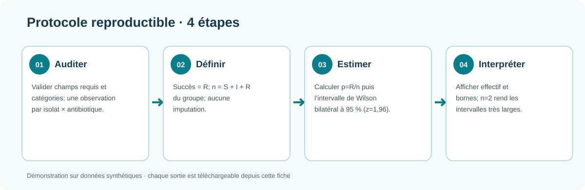
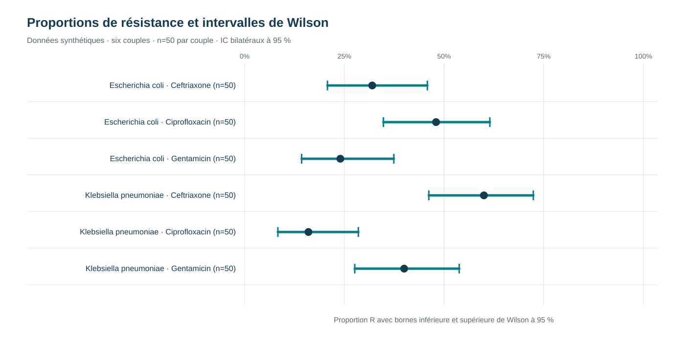

Analyse statistique biomédicale
Présenter une proportion observée avec son incertitude et rendre visibles les contrôles de qualité.
Données synthétiques · estimation descriptiveContexte et justification
L’incertitude statistique se lit avec l’effectif et le plan d’échantillonnage. Les 300 observations sont synthétiques et ne décrivent aucune fréquence clinique.
Données, tableaux, graphiques, JSON et scripts sont affichés dans cette fiche; les liens de téléchargement sont réservés aux logiciels.
1. Pourquoi quantifier l’incertitude ?
Une proportion calculée sur un échantillon est une estimation. Elle varie lorsque l’on change les observations et elle devient particulièrement instable avec de petits effectifs. Afficher uniquement un pourcentage peut donner une impression de précision injustifiée. Un intervalle de confiance apporte une information complémentaire sur la compatibilité entre l’échantillon observé et différentes valeurs possibles de la proportion.
2. Question et objectifs
Question : comment restituer des proportions de résistance sans masquer l’incertitude liée aux effectifs ?
- auditer les valeurs manquantes et les doublons ;
- calculer les proportions observées par groupe ;
- estimer les intervalles de Wilson à 95 % ;
- représenter les estimations avec leurs bornes ;
- expliquer pourquoi un intervalle large appelle davantage de données.
3. Revue de lecture
Pour une proportion binomiale, l’approximation normale peut devenir peu fiable lorsque l’effectif est faible ou que la proportion est proche de 0 ou 1. L’intervalle de Wilson est une alternative couramment utilisée car il respecte mieux les bornes 0–1 et conserve une couverture plus stable dans ces situations. Il ne corrige toutefois pas un biais de sélection et ne transforme pas un échantillon de convenance en échantillon représentatif.
Un intervalle de confiance ne signifie pas que 95 % des observations futures se trouveront dans l’intervalle. Il décrit une procédure d’estimation répétée. La communication doit donc associer la proportion, les effectifs, la méthode et le contexte de collecte.
4. Plan d’analyse et justification statistique
Le seuil de 5 % est fixé avant l’analyse comme convention de décision pour le risque de première espèce. Il ne transforme pas un résultat en vérité et ne mesure ni l’importance clinique ni la qualité des données. La proportion, son intervalle et l’effectif restent indispensables à l’interprétation.
Le contrôle amont vérifie l’unité d’analyse, les valeurs manquantes, les catégories admises et les doublons. Un doublon ne doit pas être supprimé mécaniquement : il faut déterminer s’il représente une répétition technique, un même patient ou une observation distincte. Les exclusions sont journalisées pour que le dénominateur final soit explicable.
L’intervalle de Wilson à 95 % est choisi pour éviter l’approximation normale fragile lorsque les effectifs sont faibles ou que la proportion est proche de 0 ou 1. La formule est appliquée à la proportion binomiale observée ; elle ne corrige ni un biais de sélection ni une mauvaise définition de la population.
5. Méthode
Audit préalable
Les valeurs manquantes, les catégories inattendues et les doublons sont recherchés avant les calculs.
Estimation
La proportion est calculée comme le nombre de résultats résistants divisé par l’effectif analysable.
Intervalle
Les bornes de Wilson sont calculées au niveau de confiance de 95 %, puis conservées dans le tableau de sortie.
Graphique
Chaque point est affiché avec ses bornes afin de visualiser à la fois l’estimation et sa précision.

— contenu présenté dans la ficheRègles statistiques, conditions et formule
Pour chaque groupe indépendant, x = nombre de R et n = nombre de résultats valides S + I + R. La proportion est p = x/n. L’intervalle de Wilson bilatéral à 95 % utilise z = 1,96 :
centre = (p + z²/(2n)) / (1 + z²/n)
marge = z × √(p(1−p)/n + z²/(4n²)) / (1 + z²/n)
bornes = centre ± marge, bornées à [0,1]
- Conditions : observations binomiales, dénominateur positif, résultat binaire défini (R contre non-R) et unités sans répétition dans chaque groupe.
- Audit : les champs requis et catégories sont vérifiés; une paire isolat–antibiotique répétée est marquée comme doublon et n’est pas recomptée.
- Paramétrage : intervalle bilatéral à 95 %, correspondant à z=1,96; aucun p-value ni seuil de décision n’est calculé.
- Limites : chaque groupe a n=50, mais les données restent synthétiques et non représentatives et les observations sont synthétiques. Les bornes démontrent l’incertitude, elles n’estiment pas une prévalence clinique.
6. Comparaison des groupes et résultats
La comparaison commence par les distributions : effectifs, médianes ou proportions, dispersion et valeurs extrêmes. Le choix de la statistique dépend de la variable et de son échelle ; une moyenne seule ne décrit pas correctement une distribution asymétrique. Lorsque le modèle le permet, une taille d’effet complète l’intervalle de confiance afin de distinguer la grandeur d’un écart de sa seule significativité.
Le tableau public rassemble les estimations et les bornes de Wilson. Le graphique rend immédiatement visibles les différences entre proportions, mais surtout l’ampleur des intervalles. Avec de petits effectifs, deux groupes peuvent présenter des pourcentages différents tout en ayant des intervalles qui se recouvrent largement.
Estimations et intervalles — contenu présenté dans la fiche · Audit de qualité — contenu présenté dans la fiche

Tableau visible des estimations
| Organisme | Antibiotique | R/n | R (%) | IC Wilson 95 % |
|---|---|---|---|---|
| Escherichia coli | Ceftriaxone | 16/50 | 32.0% | 20.8-45.8% |
| Escherichia coli | Ciprofloxacin | 24/50 | 48.0% | 34.8-61.5% |
| Escherichia coli | Gentamicin | 12/50 | 24.0% | 14.3-37.4% |
| Klebsiella pneumoniae | Ceftriaxone | 30/50 | 60.0% | 46.2-72.4% |
| Klebsiella pneumoniae | Ciprofloxacin | 8/50 | 16.0% | 8.3-28.5% |
| Klebsiella pneumoniae | Gentamicin | 20/50 | 40.0% | 27.6-53.8% |
7. Interprétation et limites
Un intervalle large signale une information peu précise, généralement liée à un petit nombre d’observations. Il ne faut pas le lire comme une preuve d’absence ou de présence d’un effet. L’analyse ne comporte ni ajustement sur les facteurs cliniques, ni comparaison causale, ni validation sur une cohorte indépendante. Les données sont synthétiques.
8. Conclusion
La valeur d’une analyse biomédicale réside autant dans la quantification de l’incertitude que dans le pourcentage central. Cette démarche permet de communiquer des résultats plus honnêtement et de justifier la nécessité d’un échantillon plus large lorsque la précision est insuffisante.
Données, sorties et code visibles
Données synthétiques complètes (300 lignes)
Afficher le tableau intégral · 300 lignes
| record_id | isolate_id | organism | antibiotic | result | collection_year | country | source_accession |
|---|---|---|---|---|---|---|---|
| D04-01-001 | D04-01-001 | Escherichia coli | Ceftriaxone | R | SYNTHETIC | SYNTHETIC | NOT_APPLICABLE |
| D04-01-002 | D04-01-002 | Escherichia coli | Ceftriaxone | R | SYNTHETIC | SYNTHETIC | NOT_APPLICABLE |
| D04-01-003 | D04-01-003 | Escherichia coli | Ceftriaxone | R | SYNTHETIC | SYNTHETIC | NOT_APPLICABLE |
| D04-01-004 | D04-01-004 | Escherichia coli | Ceftriaxone | R | SYNTHETIC | SYNTHETIC | NOT_APPLICABLE |
| D04-01-005 | D04-01-005 | Escherichia coli | Ceftriaxone | R | SYNTHETIC | SYNTHETIC | NOT_APPLICABLE |
| D04-01-006 | D04-01-006 | Escherichia coli | Ceftriaxone | R | SYNTHETIC | SYNTHETIC | NOT_APPLICABLE |
| D04-01-007 | D04-01-007 | Escherichia coli | Ceftriaxone | R | SYNTHETIC | SYNTHETIC | NOT_APPLICABLE |
| D04-01-008 | D04-01-008 | Escherichia coli | Ceftriaxone | R | SYNTHETIC | SYNTHETIC | NOT_APPLICABLE |
| D04-01-009 | D04-01-009 | Escherichia coli | Ceftriaxone | R | SYNTHETIC | SYNTHETIC | NOT_APPLICABLE |
| D04-01-010 | D04-01-010 | Escherichia coli | Ceftriaxone | R | SYNTHETIC | SYNTHETIC | NOT_APPLICABLE |
| D04-01-011 | D04-01-011 | Escherichia coli | Ceftriaxone | R | SYNTHETIC | SYNTHETIC | NOT_APPLICABLE |
| D04-01-012 | D04-01-012 | Escherichia coli | Ceftriaxone | R | SYNTHETIC | SYNTHETIC | NOT_APPLICABLE |
| D04-01-013 | D04-01-013 | Escherichia coli | Ceftriaxone | R | SYNTHETIC | SYNTHETIC | NOT_APPLICABLE |
| D04-01-014 | D04-01-014 | Escherichia coli | Ceftriaxone | R | SYNTHETIC | SYNTHETIC | NOT_APPLICABLE |
| D04-01-015 | D04-01-015 | Escherichia coli | Ceftriaxone | R | SYNTHETIC | SYNTHETIC | NOT_APPLICABLE |
| D04-01-016 | D04-01-016 | Escherichia coli | Ceftriaxone | R | SYNTHETIC | SYNTHETIC | NOT_APPLICABLE |
| D04-01-017 | D04-01-017 | Escherichia coli | Ceftriaxone | I | SYNTHETIC | SYNTHETIC | NOT_APPLICABLE |
| D04-01-018 | D04-01-018 | Escherichia coli | Ceftriaxone | I | SYNTHETIC | SYNTHETIC | NOT_APPLICABLE |
| D04-01-019 | D04-01-019 | Escherichia coli | Ceftriaxone | I | SYNTHETIC | SYNTHETIC | NOT_APPLICABLE |
| D04-01-020 | D04-01-020 | Escherichia coli | Ceftriaxone | I | SYNTHETIC | SYNTHETIC | NOT_APPLICABLE |
| D04-01-021 | D04-01-021 | Escherichia coli | Ceftriaxone | I | SYNTHETIC | SYNTHETIC | NOT_APPLICABLE |
| D04-01-022 | D04-01-022 | Escherichia coli | Ceftriaxone | S | SYNTHETIC | SYNTHETIC | NOT_APPLICABLE |
| D04-01-023 | D04-01-023 | Escherichia coli | Ceftriaxone | S | SYNTHETIC | SYNTHETIC | NOT_APPLICABLE |
| D04-01-024 | D04-01-024 | Escherichia coli | Ceftriaxone | S | SYNTHETIC | SYNTHETIC | NOT_APPLICABLE |
| D04-01-025 | D04-01-025 | Escherichia coli | Ceftriaxone | S | SYNTHETIC | SYNTHETIC | NOT_APPLICABLE |
| D04-01-026 | D04-01-026 | Escherichia coli | Ceftriaxone | S | SYNTHETIC | SYNTHETIC | NOT_APPLICABLE |
| D04-01-027 | D04-01-027 | Escherichia coli | Ceftriaxone | S | SYNTHETIC | SYNTHETIC | NOT_APPLICABLE |
| D04-01-028 | D04-01-028 | Escherichia coli | Ceftriaxone | S | SYNTHETIC | SYNTHETIC | NOT_APPLICABLE |
| D04-01-029 | D04-01-029 | Escherichia coli | Ceftriaxone | S | SYNTHETIC | SYNTHETIC | NOT_APPLICABLE |
| D04-01-030 | D04-01-030 | Escherichia coli | Ceftriaxone | S | SYNTHETIC | SYNTHETIC | NOT_APPLICABLE |
| D04-01-031 | D04-01-031 | Escherichia coli | Ceftriaxone | S | SYNTHETIC | SYNTHETIC | NOT_APPLICABLE |
| D04-01-032 | D04-01-032 | Escherichia coli | Ceftriaxone | S | SYNTHETIC | SYNTHETIC | NOT_APPLICABLE |
| D04-01-033 | D04-01-033 | Escherichia coli | Ceftriaxone | S | SYNTHETIC | SYNTHETIC | NOT_APPLICABLE |
| D04-01-034 | D04-01-034 | Escherichia coli | Ceftriaxone | S | SYNTHETIC | SYNTHETIC | NOT_APPLICABLE |
| D04-01-035 | D04-01-035 | Escherichia coli | Ceftriaxone | S | SYNTHETIC | SYNTHETIC | NOT_APPLICABLE |
| D04-01-036 | D04-01-036 | Escherichia coli | Ceftriaxone | S | SYNTHETIC | SYNTHETIC | NOT_APPLICABLE |
| D04-01-037 | D04-01-037 | Escherichia coli | Ceftriaxone | S | SYNTHETIC | SYNTHETIC | NOT_APPLICABLE |
| D04-01-038 | D04-01-038 | Escherichia coli | Ceftriaxone | S | SYNTHETIC | SYNTHETIC | NOT_APPLICABLE |
| D04-01-039 | D04-01-039 | Escherichia coli | Ceftriaxone | S | SYNTHETIC | SYNTHETIC | NOT_APPLICABLE |
| D04-01-040 | D04-01-040 | Escherichia coli | Ceftriaxone | S | SYNTHETIC | SYNTHETIC | NOT_APPLICABLE |
| D04-01-041 | D04-01-041 | Escherichia coli | Ceftriaxone | S | SYNTHETIC | SYNTHETIC | NOT_APPLICABLE |
| D04-01-042 | D04-01-042 | Escherichia coli | Ceftriaxone | S | SYNTHETIC | SYNTHETIC | NOT_APPLICABLE |
| D04-01-043 | D04-01-043 | Escherichia coli | Ceftriaxone | S | SYNTHETIC | SYNTHETIC | NOT_APPLICABLE |
| D04-01-044 | D04-01-044 | Escherichia coli | Ceftriaxone | S | SYNTHETIC | SYNTHETIC | NOT_APPLICABLE |
| D04-01-045 | D04-01-045 | Escherichia coli | Ceftriaxone | S | SYNTHETIC | SYNTHETIC | NOT_APPLICABLE |
| D04-01-046 | D04-01-046 | Escherichia coli | Ceftriaxone | S | SYNTHETIC | SYNTHETIC | NOT_APPLICABLE |
| D04-01-047 | D04-01-047 | Escherichia coli | Ceftriaxone | S | SYNTHETIC | SYNTHETIC | NOT_APPLICABLE |
| D04-01-048 | D04-01-048 | Escherichia coli | Ceftriaxone | S | SYNTHETIC | SYNTHETIC | NOT_APPLICABLE |
| D04-01-049 | D04-01-049 | Escherichia coli | Ceftriaxone | S | SYNTHETIC | SYNTHETIC | NOT_APPLICABLE |
| D04-01-050 | D04-01-050 | Escherichia coli | Ceftriaxone | S | SYNTHETIC | SYNTHETIC | NOT_APPLICABLE |
| D04-02-001 | D04-02-001 | Escherichia coli | Ciprofloxacin | R | SYNTHETIC | SYNTHETIC | NOT_APPLICABLE |
| D04-02-002 | D04-02-002 | Escherichia coli | Ciprofloxacin | R | SYNTHETIC | SYNTHETIC | NOT_APPLICABLE |
| D04-02-003 | D04-02-003 | Escherichia coli | Ciprofloxacin | R | SYNTHETIC | SYNTHETIC | NOT_APPLICABLE |
| D04-02-004 | D04-02-004 | Escherichia coli | Ciprofloxacin | R | SYNTHETIC | SYNTHETIC | NOT_APPLICABLE |
| D04-02-005 | D04-02-005 | Escherichia coli | Ciprofloxacin | R | SYNTHETIC | SYNTHETIC | NOT_APPLICABLE |
| D04-02-006 | D04-02-006 | Escherichia coli | Ciprofloxacin | R | SYNTHETIC | SYNTHETIC | NOT_APPLICABLE |
| D04-02-007 | D04-02-007 | Escherichia coli | Ciprofloxacin | R | SYNTHETIC | SYNTHETIC | NOT_APPLICABLE |
| D04-02-008 | D04-02-008 | Escherichia coli | Ciprofloxacin | R | SYNTHETIC | SYNTHETIC | NOT_APPLICABLE |
| D04-02-009 | D04-02-009 | Escherichia coli | Ciprofloxacin | R | SYNTHETIC | SYNTHETIC | NOT_APPLICABLE |
| D04-02-010 | D04-02-010 | Escherichia coli | Ciprofloxacin | R | SYNTHETIC | SYNTHETIC | NOT_APPLICABLE |
| D04-02-011 | D04-02-011 | Escherichia coli | Ciprofloxacin | R | SYNTHETIC | SYNTHETIC | NOT_APPLICABLE |
| D04-02-012 | D04-02-012 | Escherichia coli | Ciprofloxacin | R | SYNTHETIC | SYNTHETIC | NOT_APPLICABLE |
| D04-02-013 | D04-02-013 | Escherichia coli | Ciprofloxacin | R | SYNTHETIC | SYNTHETIC | NOT_APPLICABLE |
| D04-02-014 | D04-02-014 | Escherichia coli | Ciprofloxacin | R | SYNTHETIC | SYNTHETIC | NOT_APPLICABLE |
| D04-02-015 | D04-02-015 | Escherichia coli | Ciprofloxacin | R | SYNTHETIC | SYNTHETIC | NOT_APPLICABLE |
| D04-02-016 | D04-02-016 | Escherichia coli | Ciprofloxacin | R | SYNTHETIC | SYNTHETIC | NOT_APPLICABLE |
| D04-02-017 | D04-02-017 | Escherichia coli | Ciprofloxacin | R | SYNTHETIC | SYNTHETIC | NOT_APPLICABLE |
| D04-02-018 | D04-02-018 | Escherichia coli | Ciprofloxacin | R | SYNTHETIC | SYNTHETIC | NOT_APPLICABLE |
| D04-02-019 | D04-02-019 | Escherichia coli | Ciprofloxacin | R | SYNTHETIC | SYNTHETIC | NOT_APPLICABLE |
| D04-02-020 | D04-02-020 | Escherichia coli | Ciprofloxacin | R | SYNTHETIC | SYNTHETIC | NOT_APPLICABLE |
| D04-02-021 | D04-02-021 | Escherichia coli | Ciprofloxacin | R | SYNTHETIC | SYNTHETIC | NOT_APPLICABLE |
| D04-02-022 | D04-02-022 | Escherichia coli | Ciprofloxacin | R | SYNTHETIC | SYNTHETIC | NOT_APPLICABLE |
| D04-02-023 | D04-02-023 | Escherichia coli | Ciprofloxacin | R | SYNTHETIC | SYNTHETIC | NOT_APPLICABLE |
| D04-02-024 | D04-02-024 | Escherichia coli | Ciprofloxacin | R | SYNTHETIC | SYNTHETIC | NOT_APPLICABLE |
| D04-02-025 | D04-02-025 | Escherichia coli | Ciprofloxacin | I | SYNTHETIC | SYNTHETIC | NOT_APPLICABLE |
| D04-02-026 | D04-02-026 | Escherichia coli | Ciprofloxacin | I | SYNTHETIC | SYNTHETIC | NOT_APPLICABLE |
| D04-02-027 | D04-02-027 | Escherichia coli | Ciprofloxacin | I | SYNTHETIC | SYNTHETIC | NOT_APPLICABLE |
| D04-02-028 | D04-02-028 | Escherichia coli | Ciprofloxacin | I | SYNTHETIC | SYNTHETIC | NOT_APPLICABLE |
| D04-02-029 | D04-02-029 | Escherichia coli | Ciprofloxacin | I | SYNTHETIC | SYNTHETIC | NOT_APPLICABLE |
| D04-02-030 | D04-02-030 | Escherichia coli | Ciprofloxacin | S | SYNTHETIC | SYNTHETIC | NOT_APPLICABLE |
| D04-02-031 | D04-02-031 | Escherichia coli | Ciprofloxacin | S | SYNTHETIC | SYNTHETIC | NOT_APPLICABLE |
| D04-02-032 | D04-02-032 | Escherichia coli | Ciprofloxacin | S | SYNTHETIC | SYNTHETIC | NOT_APPLICABLE |
| D04-02-033 | D04-02-033 | Escherichia coli | Ciprofloxacin | S | SYNTHETIC | SYNTHETIC | NOT_APPLICABLE |
| D04-02-034 | D04-02-034 | Escherichia coli | Ciprofloxacin | S | SYNTHETIC | SYNTHETIC | NOT_APPLICABLE |
| D04-02-035 | D04-02-035 | Escherichia coli | Ciprofloxacin | S | SYNTHETIC | SYNTHETIC | NOT_APPLICABLE |
| D04-02-036 | D04-02-036 | Escherichia coli | Ciprofloxacin | S | SYNTHETIC | SYNTHETIC | NOT_APPLICABLE |
| D04-02-037 | D04-02-037 | Escherichia coli | Ciprofloxacin | S | SYNTHETIC | SYNTHETIC | NOT_APPLICABLE |
| D04-02-038 | D04-02-038 | Escherichia coli | Ciprofloxacin | S | SYNTHETIC | SYNTHETIC | NOT_APPLICABLE |
| D04-02-039 | D04-02-039 | Escherichia coli | Ciprofloxacin | S | SYNTHETIC | SYNTHETIC | NOT_APPLICABLE |
| D04-02-040 | D04-02-040 | Escherichia coli | Ciprofloxacin | S | SYNTHETIC | SYNTHETIC | NOT_APPLICABLE |
| D04-02-041 | D04-02-041 | Escherichia coli | Ciprofloxacin | S | SYNTHETIC | SYNTHETIC | NOT_APPLICABLE |
| D04-02-042 | D04-02-042 | Escherichia coli | Ciprofloxacin | S | SYNTHETIC | SYNTHETIC | NOT_APPLICABLE |
| D04-02-043 | D04-02-043 | Escherichia coli | Ciprofloxacin | S | SYNTHETIC | SYNTHETIC | NOT_APPLICABLE |
| D04-02-044 | D04-02-044 | Escherichia coli | Ciprofloxacin | S | SYNTHETIC | SYNTHETIC | NOT_APPLICABLE |
| D04-02-045 | D04-02-045 | Escherichia coli | Ciprofloxacin | S | SYNTHETIC | SYNTHETIC | NOT_APPLICABLE |
| D04-02-046 | D04-02-046 | Escherichia coli | Ciprofloxacin | S | SYNTHETIC | SYNTHETIC | NOT_APPLICABLE |
| D04-02-047 | D04-02-047 | Escherichia coli | Ciprofloxacin | S | SYNTHETIC | SYNTHETIC | NOT_APPLICABLE |
| D04-02-048 | D04-02-048 | Escherichia coli | Ciprofloxacin | S | SYNTHETIC | SYNTHETIC | NOT_APPLICABLE |
| D04-02-049 | D04-02-049 | Escherichia coli | Ciprofloxacin | S | SYNTHETIC | SYNTHETIC | NOT_APPLICABLE |
| D04-02-050 | D04-02-050 | Escherichia coli | Ciprofloxacin | S | SYNTHETIC | SYNTHETIC | NOT_APPLICABLE |
| D04-03-001 | D04-03-001 | Escherichia coli | Gentamicin | R | SYNTHETIC | SYNTHETIC | NOT_APPLICABLE |
| D04-03-002 | D04-03-002 | Escherichia coli | Gentamicin | R | SYNTHETIC | SYNTHETIC | NOT_APPLICABLE |
| D04-03-003 | D04-03-003 | Escherichia coli | Gentamicin | R | SYNTHETIC | SYNTHETIC | NOT_APPLICABLE |
| D04-03-004 | D04-03-004 | Escherichia coli | Gentamicin | R | SYNTHETIC | SYNTHETIC | NOT_APPLICABLE |
| D04-03-005 | D04-03-005 | Escherichia coli | Gentamicin | R | SYNTHETIC | SYNTHETIC | NOT_APPLICABLE |
| D04-03-006 | D04-03-006 | Escherichia coli | Gentamicin | R | SYNTHETIC | SYNTHETIC | NOT_APPLICABLE |
| D04-03-007 | D04-03-007 | Escherichia coli | Gentamicin | R | SYNTHETIC | SYNTHETIC | NOT_APPLICABLE |
| D04-03-008 | D04-03-008 | Escherichia coli | Gentamicin | R | SYNTHETIC | SYNTHETIC | NOT_APPLICABLE |
| D04-03-009 | D04-03-009 | Escherichia coli | Gentamicin | R | SYNTHETIC | SYNTHETIC | NOT_APPLICABLE |
| D04-03-010 | D04-03-010 | Escherichia coli | Gentamicin | R | SYNTHETIC | SYNTHETIC | NOT_APPLICABLE |
| D04-03-011 | D04-03-011 | Escherichia coli | Gentamicin | R | SYNTHETIC | SYNTHETIC | NOT_APPLICABLE |
| D04-03-012 | D04-03-012 | Escherichia coli | Gentamicin | R | SYNTHETIC | SYNTHETIC | NOT_APPLICABLE |
| D04-03-013 | D04-03-013 | Escherichia coli | Gentamicin | I | SYNTHETIC | SYNTHETIC | NOT_APPLICABLE |
| D04-03-014 | D04-03-014 | Escherichia coli | Gentamicin | I | SYNTHETIC | SYNTHETIC | NOT_APPLICABLE |
| D04-03-015 | D04-03-015 | Escherichia coli | Gentamicin | I | SYNTHETIC | SYNTHETIC | NOT_APPLICABLE |
| D04-03-016 | D04-03-016 | Escherichia coli | Gentamicin | I | SYNTHETIC | SYNTHETIC | NOT_APPLICABLE |
| D04-03-017 | D04-03-017 | Escherichia coli | Gentamicin | I | SYNTHETIC | SYNTHETIC | NOT_APPLICABLE |
| D04-03-018 | D04-03-018 | Escherichia coli | Gentamicin | S | SYNTHETIC | SYNTHETIC | NOT_APPLICABLE |
| D04-03-019 | D04-03-019 | Escherichia coli | Gentamicin | S | SYNTHETIC | SYNTHETIC | NOT_APPLICABLE |
| D04-03-020 | D04-03-020 | Escherichia coli | Gentamicin | S | SYNTHETIC | SYNTHETIC | NOT_APPLICABLE |
| D04-03-021 | D04-03-021 | Escherichia coli | Gentamicin | S | SYNTHETIC | SYNTHETIC | NOT_APPLICABLE |
| D04-03-022 | D04-03-022 | Escherichia coli | Gentamicin | S | SYNTHETIC | SYNTHETIC | NOT_APPLICABLE |
| D04-03-023 | D04-03-023 | Escherichia coli | Gentamicin | S | SYNTHETIC | SYNTHETIC | NOT_APPLICABLE |
| D04-03-024 | D04-03-024 | Escherichia coli | Gentamicin | S | SYNTHETIC | SYNTHETIC | NOT_APPLICABLE |
| D04-03-025 | D04-03-025 | Escherichia coli | Gentamicin | S | SYNTHETIC | SYNTHETIC | NOT_APPLICABLE |
| D04-03-026 | D04-03-026 | Escherichia coli | Gentamicin | S | SYNTHETIC | SYNTHETIC | NOT_APPLICABLE |
| D04-03-027 | D04-03-027 | Escherichia coli | Gentamicin | S | SYNTHETIC | SYNTHETIC | NOT_APPLICABLE |
| D04-03-028 | D04-03-028 | Escherichia coli | Gentamicin | S | SYNTHETIC | SYNTHETIC | NOT_APPLICABLE |
| D04-03-029 | D04-03-029 | Escherichia coli | Gentamicin | S | SYNTHETIC | SYNTHETIC | NOT_APPLICABLE |
| D04-03-030 | D04-03-030 | Escherichia coli | Gentamicin | S | SYNTHETIC | SYNTHETIC | NOT_APPLICABLE |
| D04-03-031 | D04-03-031 | Escherichia coli | Gentamicin | S | SYNTHETIC | SYNTHETIC | NOT_APPLICABLE |
| D04-03-032 | D04-03-032 | Escherichia coli | Gentamicin | S | SYNTHETIC | SYNTHETIC | NOT_APPLICABLE |
| D04-03-033 | D04-03-033 | Escherichia coli | Gentamicin | S | SYNTHETIC | SYNTHETIC | NOT_APPLICABLE |
| D04-03-034 | D04-03-034 | Escherichia coli | Gentamicin | S | SYNTHETIC | SYNTHETIC | NOT_APPLICABLE |
| D04-03-035 | D04-03-035 | Escherichia coli | Gentamicin | S | SYNTHETIC | SYNTHETIC | NOT_APPLICABLE |
| D04-03-036 | D04-03-036 | Escherichia coli | Gentamicin | S | SYNTHETIC | SYNTHETIC | NOT_APPLICABLE |
| D04-03-037 | D04-03-037 | Escherichia coli | Gentamicin | S | SYNTHETIC | SYNTHETIC | NOT_APPLICABLE |
| D04-03-038 | D04-03-038 | Escherichia coli | Gentamicin | S | SYNTHETIC | SYNTHETIC | NOT_APPLICABLE |
| D04-03-039 | D04-03-039 | Escherichia coli | Gentamicin | S | SYNTHETIC | SYNTHETIC | NOT_APPLICABLE |
| D04-03-040 | D04-03-040 | Escherichia coli | Gentamicin | S | SYNTHETIC | SYNTHETIC | NOT_APPLICABLE |
| D04-03-041 | D04-03-041 | Escherichia coli | Gentamicin | S | SYNTHETIC | SYNTHETIC | NOT_APPLICABLE |
| D04-03-042 | D04-03-042 | Escherichia coli | Gentamicin | S | SYNTHETIC | SYNTHETIC | NOT_APPLICABLE |
| D04-03-043 | D04-03-043 | Escherichia coli | Gentamicin | S | SYNTHETIC | SYNTHETIC | NOT_APPLICABLE |
| D04-03-044 | D04-03-044 | Escherichia coli | Gentamicin | S | SYNTHETIC | SYNTHETIC | NOT_APPLICABLE |
| D04-03-045 | D04-03-045 | Escherichia coli | Gentamicin | S | SYNTHETIC | SYNTHETIC | NOT_APPLICABLE |
| D04-03-046 | D04-03-046 | Escherichia coli | Gentamicin | S | SYNTHETIC | SYNTHETIC | NOT_APPLICABLE |
| D04-03-047 | D04-03-047 | Escherichia coli | Gentamicin | S | SYNTHETIC | SYNTHETIC | NOT_APPLICABLE |
| D04-03-048 | D04-03-048 | Escherichia coli | Gentamicin | S | SYNTHETIC | SYNTHETIC | NOT_APPLICABLE |
| D04-03-049 | D04-03-049 | Escherichia coli | Gentamicin | S | SYNTHETIC | SYNTHETIC | NOT_APPLICABLE |
| D04-03-050 | D04-03-050 | Escherichia coli | Gentamicin | S | SYNTHETIC | SYNTHETIC | NOT_APPLICABLE |
| D04-04-001 | D04-04-001 | Klebsiella pneumoniae | Ceftriaxone | R | SYNTHETIC | SYNTHETIC | NOT_APPLICABLE |
| D04-04-002 | D04-04-002 | Klebsiella pneumoniae | Ceftriaxone | R | SYNTHETIC | SYNTHETIC | NOT_APPLICABLE |
| D04-04-003 | D04-04-003 | Klebsiella pneumoniae | Ceftriaxone | R | SYNTHETIC | SYNTHETIC | NOT_APPLICABLE |
| D04-04-004 | D04-04-004 | Klebsiella pneumoniae | Ceftriaxone | R | SYNTHETIC | SYNTHETIC | NOT_APPLICABLE |
| D04-04-005 | D04-04-005 | Klebsiella pneumoniae | Ceftriaxone | R | SYNTHETIC | SYNTHETIC | NOT_APPLICABLE |
| D04-04-006 | D04-04-006 | Klebsiella pneumoniae | Ceftriaxone | R | SYNTHETIC | SYNTHETIC | NOT_APPLICABLE |
| D04-04-007 | D04-04-007 | Klebsiella pneumoniae | Ceftriaxone | R | SYNTHETIC | SYNTHETIC | NOT_APPLICABLE |
| D04-04-008 | D04-04-008 | Klebsiella pneumoniae | Ceftriaxone | R | SYNTHETIC | SYNTHETIC | NOT_APPLICABLE |
| D04-04-009 | D04-04-009 | Klebsiella pneumoniae | Ceftriaxone | R | SYNTHETIC | SYNTHETIC | NOT_APPLICABLE |
| D04-04-010 | D04-04-010 | Klebsiella pneumoniae | Ceftriaxone | R | SYNTHETIC | SYNTHETIC | NOT_APPLICABLE |
| D04-04-011 | D04-04-011 | Klebsiella pneumoniae | Ceftriaxone | R | SYNTHETIC | SYNTHETIC | NOT_APPLICABLE |
| D04-04-012 | D04-04-012 | Klebsiella pneumoniae | Ceftriaxone | R | SYNTHETIC | SYNTHETIC | NOT_APPLICABLE |
| D04-04-013 | D04-04-013 | Klebsiella pneumoniae | Ceftriaxone | R | SYNTHETIC | SYNTHETIC | NOT_APPLICABLE |
| D04-04-014 | D04-04-014 | Klebsiella pneumoniae | Ceftriaxone | R | SYNTHETIC | SYNTHETIC | NOT_APPLICABLE |
| D04-04-015 | D04-04-015 | Klebsiella pneumoniae | Ceftriaxone | R | SYNTHETIC | SYNTHETIC | NOT_APPLICABLE |
| D04-04-016 | D04-04-016 | Klebsiella pneumoniae | Ceftriaxone | R | SYNTHETIC | SYNTHETIC | NOT_APPLICABLE |
| D04-04-017 | D04-04-017 | Klebsiella pneumoniae | Ceftriaxone | R | SYNTHETIC | SYNTHETIC | NOT_APPLICABLE |
| D04-04-018 | D04-04-018 | Klebsiella pneumoniae | Ceftriaxone | R | SYNTHETIC | SYNTHETIC | NOT_APPLICABLE |
| D04-04-019 | D04-04-019 | Klebsiella pneumoniae | Ceftriaxone | R | SYNTHETIC | SYNTHETIC | NOT_APPLICABLE |
| D04-04-020 | D04-04-020 | Klebsiella pneumoniae | Ceftriaxone | R | SYNTHETIC | SYNTHETIC | NOT_APPLICABLE |
| D04-04-021 | D04-04-021 | Klebsiella pneumoniae | Ceftriaxone | R | SYNTHETIC | SYNTHETIC | NOT_APPLICABLE |
| D04-04-022 | D04-04-022 | Klebsiella pneumoniae | Ceftriaxone | R | SYNTHETIC | SYNTHETIC | NOT_APPLICABLE |
| D04-04-023 | D04-04-023 | Klebsiella pneumoniae | Ceftriaxone | R | SYNTHETIC | SYNTHETIC | NOT_APPLICABLE |
| D04-04-024 | D04-04-024 | Klebsiella pneumoniae | Ceftriaxone | R | SYNTHETIC | SYNTHETIC | NOT_APPLICABLE |
| D04-04-025 | D04-04-025 | Klebsiella pneumoniae | Ceftriaxone | R | SYNTHETIC | SYNTHETIC | NOT_APPLICABLE |
| D04-04-026 | D04-04-026 | Klebsiella pneumoniae | Ceftriaxone | R | SYNTHETIC | SYNTHETIC | NOT_APPLICABLE |
| D04-04-027 | D04-04-027 | Klebsiella pneumoniae | Ceftriaxone | R | SYNTHETIC | SYNTHETIC | NOT_APPLICABLE |
| D04-04-028 | D04-04-028 | Klebsiella pneumoniae | Ceftriaxone | R | SYNTHETIC | SYNTHETIC | NOT_APPLICABLE |
| D04-04-029 | D04-04-029 | Klebsiella pneumoniae | Ceftriaxone | R | SYNTHETIC | SYNTHETIC | NOT_APPLICABLE |
| D04-04-030 | D04-04-030 | Klebsiella pneumoniae | Ceftriaxone | R | SYNTHETIC | SYNTHETIC | NOT_APPLICABLE |
| D04-04-031 | D04-04-031 | Klebsiella pneumoniae | Ceftriaxone | I | SYNTHETIC | SYNTHETIC | NOT_APPLICABLE |
| D04-04-032 | D04-04-032 | Klebsiella pneumoniae | Ceftriaxone | I | SYNTHETIC | SYNTHETIC | NOT_APPLICABLE |
| D04-04-033 | D04-04-033 | Klebsiella pneumoniae | Ceftriaxone | I | SYNTHETIC | SYNTHETIC | NOT_APPLICABLE |
| D04-04-034 | D04-04-034 | Klebsiella pneumoniae | Ceftriaxone | I | SYNTHETIC | SYNTHETIC | NOT_APPLICABLE |
| D04-04-035 | D04-04-035 | Klebsiella pneumoniae | Ceftriaxone | I | SYNTHETIC | SYNTHETIC | NOT_APPLICABLE |
| D04-04-036 | D04-04-036 | Klebsiella pneumoniae | Ceftriaxone | S | SYNTHETIC | SYNTHETIC | NOT_APPLICABLE |
| D04-04-037 | D04-04-037 | Klebsiella pneumoniae | Ceftriaxone | S | SYNTHETIC | SYNTHETIC | NOT_APPLICABLE |
| D04-04-038 | D04-04-038 | Klebsiella pneumoniae | Ceftriaxone | S | SYNTHETIC | SYNTHETIC | NOT_APPLICABLE |
| D04-04-039 | D04-04-039 | Klebsiella pneumoniae | Ceftriaxone | S | SYNTHETIC | SYNTHETIC | NOT_APPLICABLE |
| D04-04-040 | D04-04-040 | Klebsiella pneumoniae | Ceftriaxone | S | SYNTHETIC | SYNTHETIC | NOT_APPLICABLE |
| D04-04-041 | D04-04-041 | Klebsiella pneumoniae | Ceftriaxone | S | SYNTHETIC | SYNTHETIC | NOT_APPLICABLE |
| D04-04-042 | D04-04-042 | Klebsiella pneumoniae | Ceftriaxone | S | SYNTHETIC | SYNTHETIC | NOT_APPLICABLE |
| D04-04-043 | D04-04-043 | Klebsiella pneumoniae | Ceftriaxone | S | SYNTHETIC | SYNTHETIC | NOT_APPLICABLE |
| D04-04-044 | D04-04-044 | Klebsiella pneumoniae | Ceftriaxone | S | SYNTHETIC | SYNTHETIC | NOT_APPLICABLE |
| D04-04-045 | D04-04-045 | Klebsiella pneumoniae | Ceftriaxone | S | SYNTHETIC | SYNTHETIC | NOT_APPLICABLE |
| D04-04-046 | D04-04-046 | Klebsiella pneumoniae | Ceftriaxone | S | SYNTHETIC | SYNTHETIC | NOT_APPLICABLE |
| D04-04-047 | D04-04-047 | Klebsiella pneumoniae | Ceftriaxone | S | SYNTHETIC | SYNTHETIC | NOT_APPLICABLE |
| D04-04-048 | D04-04-048 | Klebsiella pneumoniae | Ceftriaxone | S | SYNTHETIC | SYNTHETIC | NOT_APPLICABLE |
| D04-04-049 | D04-04-049 | Klebsiella pneumoniae | Ceftriaxone | S | SYNTHETIC | SYNTHETIC | NOT_APPLICABLE |
| D04-04-050 | D04-04-050 | Klebsiella pneumoniae | Ceftriaxone | S | SYNTHETIC | SYNTHETIC | NOT_APPLICABLE |
| D04-05-001 | D04-05-001 | Klebsiella pneumoniae | Ciprofloxacin | R | SYNTHETIC | SYNTHETIC | NOT_APPLICABLE |
| D04-05-002 | D04-05-002 | Klebsiella pneumoniae | Ciprofloxacin | R | SYNTHETIC | SYNTHETIC | NOT_APPLICABLE |
| D04-05-003 | D04-05-003 | Klebsiella pneumoniae | Ciprofloxacin | R | SYNTHETIC | SYNTHETIC | NOT_APPLICABLE |
| D04-05-004 | D04-05-004 | Klebsiella pneumoniae | Ciprofloxacin | R | SYNTHETIC | SYNTHETIC | NOT_APPLICABLE |
| D04-05-005 | D04-05-005 | Klebsiella pneumoniae | Ciprofloxacin | R | SYNTHETIC | SYNTHETIC | NOT_APPLICABLE |
| D04-05-006 | D04-05-006 | Klebsiella pneumoniae | Ciprofloxacin | R | SYNTHETIC | SYNTHETIC | NOT_APPLICABLE |
| D04-05-007 | D04-05-007 | Klebsiella pneumoniae | Ciprofloxacin | R | SYNTHETIC | SYNTHETIC | NOT_APPLICABLE |
| D04-05-008 | D04-05-008 | Klebsiella pneumoniae | Ciprofloxacin | R | SYNTHETIC | SYNTHETIC | NOT_APPLICABLE |
| D04-05-009 | D04-05-009 | Klebsiella pneumoniae | Ciprofloxacin | I | SYNTHETIC | SYNTHETIC | NOT_APPLICABLE |
| D04-05-010 | D04-05-010 | Klebsiella pneumoniae | Ciprofloxacin | I | SYNTHETIC | SYNTHETIC | NOT_APPLICABLE |
| D04-05-011 | D04-05-011 | Klebsiella pneumoniae | Ciprofloxacin | I | SYNTHETIC | SYNTHETIC | NOT_APPLICABLE |
| D04-05-012 | D04-05-012 | Klebsiella pneumoniae | Ciprofloxacin | I | SYNTHETIC | SYNTHETIC | NOT_APPLICABLE |
| D04-05-013 | D04-05-013 | Klebsiella pneumoniae | Ciprofloxacin | I | SYNTHETIC | SYNTHETIC | NOT_APPLICABLE |
| D04-05-014 | D04-05-014 | Klebsiella pneumoniae | Ciprofloxacin | S | SYNTHETIC | SYNTHETIC | NOT_APPLICABLE |
| D04-05-015 | D04-05-015 | Klebsiella pneumoniae | Ciprofloxacin | S | SYNTHETIC | SYNTHETIC | NOT_APPLICABLE |
| D04-05-016 | D04-05-016 | Klebsiella pneumoniae | Ciprofloxacin | S | SYNTHETIC | SYNTHETIC | NOT_APPLICABLE |
| D04-05-017 | D04-05-017 | Klebsiella pneumoniae | Ciprofloxacin | S | SYNTHETIC | SYNTHETIC | NOT_APPLICABLE |
| D04-05-018 | D04-05-018 | Klebsiella pneumoniae | Ciprofloxacin | S | SYNTHETIC | SYNTHETIC | NOT_APPLICABLE |
| D04-05-019 | D04-05-019 | Klebsiella pneumoniae | Ciprofloxacin | S | SYNTHETIC | SYNTHETIC | NOT_APPLICABLE |
| D04-05-020 | D04-05-020 | Klebsiella pneumoniae | Ciprofloxacin | S | SYNTHETIC | SYNTHETIC | NOT_APPLICABLE |
| D04-05-021 | D04-05-021 | Klebsiella pneumoniae | Ciprofloxacin | S | SYNTHETIC | SYNTHETIC | NOT_APPLICABLE |
| D04-05-022 | D04-05-022 | Klebsiella pneumoniae | Ciprofloxacin | S | SYNTHETIC | SYNTHETIC | NOT_APPLICABLE |
| D04-05-023 | D04-05-023 | Klebsiella pneumoniae | Ciprofloxacin | S | SYNTHETIC | SYNTHETIC | NOT_APPLICABLE |
| D04-05-024 | D04-05-024 | Klebsiella pneumoniae | Ciprofloxacin | S | SYNTHETIC | SYNTHETIC | NOT_APPLICABLE |
| D04-05-025 | D04-05-025 | Klebsiella pneumoniae | Ciprofloxacin | S | SYNTHETIC | SYNTHETIC | NOT_APPLICABLE |
| D04-05-026 | D04-05-026 | Klebsiella pneumoniae | Ciprofloxacin | S | SYNTHETIC | SYNTHETIC | NOT_APPLICABLE |
| D04-05-027 | D04-05-027 | Klebsiella pneumoniae | Ciprofloxacin | S | SYNTHETIC | SYNTHETIC | NOT_APPLICABLE |
| D04-05-028 | D04-05-028 | Klebsiella pneumoniae | Ciprofloxacin | S | SYNTHETIC | SYNTHETIC | NOT_APPLICABLE |
| D04-05-029 | D04-05-029 | Klebsiella pneumoniae | Ciprofloxacin | S | SYNTHETIC | SYNTHETIC | NOT_APPLICABLE |
| D04-05-030 | D04-05-030 | Klebsiella pneumoniae | Ciprofloxacin | S | SYNTHETIC | SYNTHETIC | NOT_APPLICABLE |
| D04-05-031 | D04-05-031 | Klebsiella pneumoniae | Ciprofloxacin | S | SYNTHETIC | SYNTHETIC | NOT_APPLICABLE |
| D04-05-032 | D04-05-032 | Klebsiella pneumoniae | Ciprofloxacin | S | SYNTHETIC | SYNTHETIC | NOT_APPLICABLE |
| D04-05-033 | D04-05-033 | Klebsiella pneumoniae | Ciprofloxacin | S | SYNTHETIC | SYNTHETIC | NOT_APPLICABLE |
| D04-05-034 | D04-05-034 | Klebsiella pneumoniae | Ciprofloxacin | S | SYNTHETIC | SYNTHETIC | NOT_APPLICABLE |
| D04-05-035 | D04-05-035 | Klebsiella pneumoniae | Ciprofloxacin | S | SYNTHETIC | SYNTHETIC | NOT_APPLICABLE |
| D04-05-036 | D04-05-036 | Klebsiella pneumoniae | Ciprofloxacin | S | SYNTHETIC | SYNTHETIC | NOT_APPLICABLE |
| D04-05-037 | D04-05-037 | Klebsiella pneumoniae | Ciprofloxacin | S | SYNTHETIC | SYNTHETIC | NOT_APPLICABLE |
| D04-05-038 | D04-05-038 | Klebsiella pneumoniae | Ciprofloxacin | S | SYNTHETIC | SYNTHETIC | NOT_APPLICABLE |
| D04-05-039 | D04-05-039 | Klebsiella pneumoniae | Ciprofloxacin | S | SYNTHETIC | SYNTHETIC | NOT_APPLICABLE |
| D04-05-040 | D04-05-040 | Klebsiella pneumoniae | Ciprofloxacin | S | SYNTHETIC | SYNTHETIC | NOT_APPLICABLE |
| D04-05-041 | D04-05-041 | Klebsiella pneumoniae | Ciprofloxacin | S | SYNTHETIC | SYNTHETIC | NOT_APPLICABLE |
| D04-05-042 | D04-05-042 | Klebsiella pneumoniae | Ciprofloxacin | S | SYNTHETIC | SYNTHETIC | NOT_APPLICABLE |
| D04-05-043 | D04-05-043 | Klebsiella pneumoniae | Ciprofloxacin | S | SYNTHETIC | SYNTHETIC | NOT_APPLICABLE |
| D04-05-044 | D04-05-044 | Klebsiella pneumoniae | Ciprofloxacin | S | SYNTHETIC | SYNTHETIC | NOT_APPLICABLE |
| D04-05-045 | D04-05-045 | Klebsiella pneumoniae | Ciprofloxacin | S | SYNTHETIC | SYNTHETIC | NOT_APPLICABLE |
| D04-05-046 | D04-05-046 | Klebsiella pneumoniae | Ciprofloxacin | S | SYNTHETIC | SYNTHETIC | NOT_APPLICABLE |
| D04-05-047 | D04-05-047 | Klebsiella pneumoniae | Ciprofloxacin | S | SYNTHETIC | SYNTHETIC | NOT_APPLICABLE |
| D04-05-048 | D04-05-048 | Klebsiella pneumoniae | Ciprofloxacin | S | SYNTHETIC | SYNTHETIC | NOT_APPLICABLE |
| D04-05-049 | D04-05-049 | Klebsiella pneumoniae | Ciprofloxacin | S | SYNTHETIC | SYNTHETIC | NOT_APPLICABLE |
| D04-05-050 | D04-05-050 | Klebsiella pneumoniae | Ciprofloxacin | S | SYNTHETIC | SYNTHETIC | NOT_APPLICABLE |
| D04-06-001 | D04-06-001 | Klebsiella pneumoniae | Gentamicin | R | SYNTHETIC | SYNTHETIC | NOT_APPLICABLE |
| D04-06-002 | D04-06-002 | Klebsiella pneumoniae | Gentamicin | R | SYNTHETIC | SYNTHETIC | NOT_APPLICABLE |
| D04-06-003 | D04-06-003 | Klebsiella pneumoniae | Gentamicin | R | SYNTHETIC | SYNTHETIC | NOT_APPLICABLE |
| D04-06-004 | D04-06-004 | Klebsiella pneumoniae | Gentamicin | R | SYNTHETIC | SYNTHETIC | NOT_APPLICABLE |
| D04-06-005 | D04-06-005 | Klebsiella pneumoniae | Gentamicin | R | SYNTHETIC | SYNTHETIC | NOT_APPLICABLE |
| D04-06-006 | D04-06-006 | Klebsiella pneumoniae | Gentamicin | R | SYNTHETIC | SYNTHETIC | NOT_APPLICABLE |
| D04-06-007 | D04-06-007 | Klebsiella pneumoniae | Gentamicin | R | SYNTHETIC | SYNTHETIC | NOT_APPLICABLE |
| D04-06-008 | D04-06-008 | Klebsiella pneumoniae | Gentamicin | R | SYNTHETIC | SYNTHETIC | NOT_APPLICABLE |
| D04-06-009 | D04-06-009 | Klebsiella pneumoniae | Gentamicin | R | SYNTHETIC | SYNTHETIC | NOT_APPLICABLE |
| D04-06-010 | D04-06-010 | Klebsiella pneumoniae | Gentamicin | R | SYNTHETIC | SYNTHETIC | NOT_APPLICABLE |
| D04-06-011 | D04-06-011 | Klebsiella pneumoniae | Gentamicin | R | SYNTHETIC | SYNTHETIC | NOT_APPLICABLE |
| D04-06-012 | D04-06-012 | Klebsiella pneumoniae | Gentamicin | R | SYNTHETIC | SYNTHETIC | NOT_APPLICABLE |
| D04-06-013 | D04-06-013 | Klebsiella pneumoniae | Gentamicin | R | SYNTHETIC | SYNTHETIC | NOT_APPLICABLE |
| D04-06-014 | D04-06-014 | Klebsiella pneumoniae | Gentamicin | R | SYNTHETIC | SYNTHETIC | NOT_APPLICABLE |
| D04-06-015 | D04-06-015 | Klebsiella pneumoniae | Gentamicin | R | SYNTHETIC | SYNTHETIC | NOT_APPLICABLE |
| D04-06-016 | D04-06-016 | Klebsiella pneumoniae | Gentamicin | R | SYNTHETIC | SYNTHETIC | NOT_APPLICABLE |
| D04-06-017 | D04-06-017 | Klebsiella pneumoniae | Gentamicin | R | SYNTHETIC | SYNTHETIC | NOT_APPLICABLE |
| D04-06-018 | D04-06-018 | Klebsiella pneumoniae | Gentamicin | R | SYNTHETIC | SYNTHETIC | NOT_APPLICABLE |
| D04-06-019 | D04-06-019 | Klebsiella pneumoniae | Gentamicin | R | SYNTHETIC | SYNTHETIC | NOT_APPLICABLE |
| D04-06-020 | D04-06-020 | Klebsiella pneumoniae | Gentamicin | R | SYNTHETIC | SYNTHETIC | NOT_APPLICABLE |
| D04-06-021 | D04-06-021 | Klebsiella pneumoniae | Gentamicin | I | SYNTHETIC | SYNTHETIC | NOT_APPLICABLE |
| D04-06-022 | D04-06-022 | Klebsiella pneumoniae | Gentamicin | I | SYNTHETIC | SYNTHETIC | NOT_APPLICABLE |
| D04-06-023 | D04-06-023 | Klebsiella pneumoniae | Gentamicin | I | SYNTHETIC | SYNTHETIC | NOT_APPLICABLE |
| D04-06-024 | D04-06-024 | Klebsiella pneumoniae | Gentamicin | I | SYNTHETIC | SYNTHETIC | NOT_APPLICABLE |
| D04-06-025 | D04-06-025 | Klebsiella pneumoniae | Gentamicin | I | SYNTHETIC | SYNTHETIC | NOT_APPLICABLE |
| D04-06-026 | D04-06-026 | Klebsiella pneumoniae | Gentamicin | S | SYNTHETIC | SYNTHETIC | NOT_APPLICABLE |
| D04-06-027 | D04-06-027 | Klebsiella pneumoniae | Gentamicin | S | SYNTHETIC | SYNTHETIC | NOT_APPLICABLE |
| D04-06-028 | D04-06-028 | Klebsiella pneumoniae | Gentamicin | S | SYNTHETIC | SYNTHETIC | NOT_APPLICABLE |
| D04-06-029 | D04-06-029 | Klebsiella pneumoniae | Gentamicin | S | SYNTHETIC | SYNTHETIC | NOT_APPLICABLE |
| D04-06-030 | D04-06-030 | Klebsiella pneumoniae | Gentamicin | S | SYNTHETIC | SYNTHETIC | NOT_APPLICABLE |
| D04-06-031 | D04-06-031 | Klebsiella pneumoniae | Gentamicin | S | SYNTHETIC | SYNTHETIC | NOT_APPLICABLE |
| D04-06-032 | D04-06-032 | Klebsiella pneumoniae | Gentamicin | S | SYNTHETIC | SYNTHETIC | NOT_APPLICABLE |
| D04-06-033 | D04-06-033 | Klebsiella pneumoniae | Gentamicin | S | SYNTHETIC | SYNTHETIC | NOT_APPLICABLE |
| D04-06-034 | D04-06-034 | Klebsiella pneumoniae | Gentamicin | S | SYNTHETIC | SYNTHETIC | NOT_APPLICABLE |
| D04-06-035 | D04-06-035 | Klebsiella pneumoniae | Gentamicin | S | SYNTHETIC | SYNTHETIC | NOT_APPLICABLE |
| D04-06-036 | D04-06-036 | Klebsiella pneumoniae | Gentamicin | S | SYNTHETIC | SYNTHETIC | NOT_APPLICABLE |
| D04-06-037 | D04-06-037 | Klebsiella pneumoniae | Gentamicin | S | SYNTHETIC | SYNTHETIC | NOT_APPLICABLE |
| D04-06-038 | D04-06-038 | Klebsiella pneumoniae | Gentamicin | S | SYNTHETIC | SYNTHETIC | NOT_APPLICABLE |
| D04-06-039 | D04-06-039 | Klebsiella pneumoniae | Gentamicin | S | SYNTHETIC | SYNTHETIC | NOT_APPLICABLE |
| D04-06-040 | D04-06-040 | Klebsiella pneumoniae | Gentamicin | S | SYNTHETIC | SYNTHETIC | NOT_APPLICABLE |
| D04-06-041 | D04-06-041 | Klebsiella pneumoniae | Gentamicin | S | SYNTHETIC | SYNTHETIC | NOT_APPLICABLE |
| D04-06-042 | D04-06-042 | Klebsiella pneumoniae | Gentamicin | S | SYNTHETIC | SYNTHETIC | NOT_APPLICABLE |
| D04-06-043 | D04-06-043 | Klebsiella pneumoniae | Gentamicin | S | SYNTHETIC | SYNTHETIC | NOT_APPLICABLE |
| D04-06-044 | D04-06-044 | Klebsiella pneumoniae | Gentamicin | S | SYNTHETIC | SYNTHETIC | NOT_APPLICABLE |
| D04-06-045 | D04-06-045 | Klebsiella pneumoniae | Gentamicin | S | SYNTHETIC | SYNTHETIC | NOT_APPLICABLE |
| D04-06-046 | D04-06-046 | Klebsiella pneumoniae | Gentamicin | S | SYNTHETIC | SYNTHETIC | NOT_APPLICABLE |
| D04-06-047 | D04-06-047 | Klebsiella pneumoniae | Gentamicin | S | SYNTHETIC | SYNTHETIC | NOT_APPLICABLE |
| D04-06-048 | D04-06-048 | Klebsiella pneumoniae | Gentamicin | S | SYNTHETIC | SYNTHETIC | NOT_APPLICABLE |
| D04-06-049 | D04-06-049 | Klebsiella pneumoniae | Gentamicin | S | SYNTHETIC | SYNTHETIC | NOT_APPLICABLE |
| D04-06-050 | D04-06-050 | Klebsiella pneumoniae | Gentamicin | S | SYNTHETIC | SYNTHETIC | NOT_APPLICABLE |
Estimations et IC de Wilson à 95 %
Afficher le tableau intégral · 6 lignes
| organism | antibiotic | n_tested | resistant_n | intermediate_n | susceptible_n | resistant_pct | wilson95_low_pct | wilson95_high_pct |
|---|---|---|---|---|---|---|---|---|
| Escherichia coli | Ceftriaxone | 50 | 16 | 5 | 29 | 32.0 | 20.758044093999402 | 45.810557136276074 |
| Escherichia coli | Ciprofloxacin | 50 | 24 | 5 | 21 | 48.0 | 34.79691239550571 | 61.48848774119157 |
| Escherichia coli | Gentamicin | 50 | 12 | 5 | 33 | 24.0 | 14.297252401872207 | 37.41294937519236 |
| Klebsiella pneumoniae | Ceftriaxone | 50 | 30 | 5 | 15 | 60.0 | 46.18118910275937 | 72.39181021375425 |
| Klebsiella pneumoniae | Ciprofloxacin | 50 | 8 | 5 | 37 | 16.0 | 8.337321362087696 | 28.51448096176598 |
| Klebsiella pneumoniae | Gentamicin | 50 | 20 | 5 | 25 | 40.0 | 27.608189786245752 | 53.81881089724063 |
Audit préalable JSON
{
"rows_received": 300,
"rows_curated": 300,
"missing_by_column": {
"record_id": 0,
"isolate_id": 0,
"organism": 0,
"antibiotic": 0,
"result": 0,
"collection_year": 0,
"country": 0,
"source_accession": 0
},
"duplicate_isolate_antibiotic_rows": 0,
"invalid_result_values": [],
"issue_rows": [],
"dataset_status": "synthetic demonstration; not clinical data"
}Script Python complet (audit, Wilson et figure)
Code complet · 98 lignes
#!/usr/bin/env python3
"""Rebuild the Project 04 data audit, Wilson intervals, and SVG with stdlib."""
from __future__ import annotations
import argparse
import csv
import html
import json
from collections import Counter, defaultdict
from pathlib import Path
ROOT = Path(__file__).resolve().parents[1]
REQUIRED = ("isolate_id", "organism", "antibiotic", "result")
Z_95 = 1.96
def wilson(successes: int, n: int, z: float = Z_95) -> tuple[float, float]:
if n <= 0 or not 0 <= successes <= n:
raise ValueError("Wilson interval requires 0 <= successes <= n and n > 0")
p = successes / n
denom = 1 + z * z / n
center = (p + z * z / (2 * n)) / denom
margin = z * ((p * (1 - p) / n + z * z / (4 * n * n)) ** 0.5) / denom
return max(0.0, center - margin), min(1.0, center + margin)
def write_svg(rows: list[dict[str, object]], path: Path) -> None:
x0, width = 500, 815
out = ['<svg xmlns="http://www.w3.org/2000/svg" viewBox="0 0 1400 690" role="img" aria-labelledby="title desc">',
'<title id="title">Wilson intervals for synthetic resistance proportions</title>',
'<desc id="desc">Six synthetic organism-antibiotic groups with n equals fifty; Wilson 95 percent intervals.</desc>',
'<rect width="100%" height="100%" fill="#fff"/>',
'<text x="55" y="55" font-family="Arial" font-size="26" font-weight="700" fill="#153b52">Proportions de résistance et intervalles de Wilson</text>',
'<text x="55" y="88" font-family="Arial" font-size="16" fill="#59686e">Données synthétiques · six couples · n=50 par couple · IC bilatéraux à 95 %</text>']
for tick in (0, 25, 50, 75, 100):
x = x0 + width * tick / 100
out += [f'<line x1="{x:.1f}" y1="130" x2="{x:.1f}" y2="625" stroke="#d7e1e4"/>',
f'<text x="{x:.1f}" y="120" text-anchor="middle" font-family="Arial" font-size="14" fill="#59686e">{tick}%</text>']
for i, row in enumerate(rows):
y = 175 + i * 75
label = html.escape(f"{row['organism']} · {row['antibiotic']} (n={row['n_tested']})")
lo, hi, p = float(row["wilson95_low_pct"]), float(row["wilson95_high_pct"]), float(row["resistant_pct"])
xlo, xhi, xp = x0 + width * lo / 100, x0 + width * hi / 100, x0 + width * p / 100
out += [f'<text x="482" y="{y + 5}" text-anchor="end" font-family="Arial" font-size="16" fill="#153b52">{label}</text>',
f'<line x1="{xlo:.1f}" y1="{y}" x2="{xhi:.1f}" y2="{y}" stroke="#087e8b" stroke-width="5" stroke-linecap="round"/>',
f'<line x1="{xlo:.1f}" y1="{y-10}" x2="{xlo:.1f}" y2="{y+10}" stroke="#087e8b" stroke-width="3"/>',
f'<line x1="{xhi:.1f}" y1="{y-10}" x2="{xhi:.1f}" y2="{y+10}" stroke="#087e8b" stroke-width="3"/>',
f'<circle cx="{xp:.1f}" cy="{y}" r="8" fill="#153b52"/>',
f'<line x1="55" y1="{y+33}" x2="1345" y2="{y+33}" stroke="#d7e1e4"/>']
out += ['<text x="907" y="660" text-anchor="middle" font-family="Arial" font-size="15" fill="#59686e">Proportion R avec bornes inférieure et supérieure de Wilson à 95 %</text>', '</svg>']
path.parent.mkdir(parents=True, exist_ok=True); path.write_text("\n".join(out), encoding="utf-8")
def main() -> None:
parser = argparse.ArgumentParser(description=__doc__)
parser.add_argument("--input", type=Path, default=ROOT / "data" / "DEMO_SYNTHETIC_wilson.csv")
parser.add_argument("--output-dir", type=Path, default=ROOT / "results")
args = parser.parse_args()
with args.input.open(newline="", encoding="utf-8-sig") as handle:
reader = csv.DictReader(handle)
if not reader.fieldnames or not set(REQUIRED).issubset(reader.fieldnames):
raise SystemExit(f"Input must contain columns: {', '.join(REQUIRED)}")
records = list(reader)
missing = {column: 0 for column in (reader.fieldnames or [])}
issues, seen, groups = [], set(), defaultdict(Counter)
for line, row in enumerate(records, start=2):
for column in missing:
if not (row.get(column) or "").strip(): missing[column] += 1
isolate, organism, antibiotic = ((row.get(k) or "").strip() for k in ("isolate_id", "organism", "antibiotic"))
result = (row.get("result") or "").strip().upper()
if not isolate or not organism or not antibiotic or result not in {"S", "I", "R"}:
issues.append({"row_number": line, "issue": "missing_or_invalid_required_value", "value": result, "isolate_id": isolate, "antibiotic": antibiotic}); continue
key = (isolate, antibiotic)
if key in seen:
issues.append({"row_number": line, "issue": "duplicate_isolate_antibiotic", "value": result, "isolate_id": isolate, "antibiotic": antibiotic}); continue
seen.add(key); groups[(organism, antibiotic)][result] += 1
rows = []
for (organism, antibiotic), tally in sorted(groups.items()):
n, r = sum(tally.values()), tally["R"]
lo, hi = wilson(r, n)
rows.append({"organism": organism, "antibiotic": antibiotic, "n_tested": n, "resistant_n": r,
"intermediate_n": tally["I"], "susceptible_n": tally["S"], "resistant_pct": round(100 * r / n, 1),
"wilson95_low_pct": lo * 100, "wilson95_high_pct": hi * 100})
args.output_dir.mkdir(parents=True, exist_ok=True)
headers = ["organism", "antibiotic", "n_tested", "resistant_n", "intermediate_n", "susceptible_n", "resistant_pct", "wilson95_low_pct", "wilson95_high_pct"]
with (args.output_dir / "amr_estimates_with_wilson_ci.csv").open("w", newline="", encoding="utf-8") as handle:
writer = csv.DictWriter(handle, fieldnames=headers); writer.writeheader(); writer.writerows(rows)
audit = {"rows_received": len(records), "rows_curated": sum(sum(t.values()) for t in groups.values()),
"missing_by_column": missing, "duplicate_isolate_antibiotic_rows": sum(i["issue"] == "duplicate_isolate_antibiotic" for i in issues),
"invalid_result_values": sorted({str(i["value"]) for i in issues if i["issue"] == "missing_or_invalid_required_value"}),
"issue_rows": issues, "dataset_status": "synthetic demonstration; not clinical data"}
(args.output_dir / "data_quality_audit.json").write_text(json.dumps(audit, indent=2) + "\n", encoding="utf-8")
write_svg(rows, args.output_dir / "amr_wilson_intervals.svg")
print(f"Audited {len(records)} synthetic rows; exported {len(rows)} groups and Wilson intervals.")
if __name__ == "__main__":
main()
Justification
Wilson est un intervalle score binomial, souvent préférable à Wald quand n est faible ou p proche de 0/1; il ne corrige pas le biais de sélection. 95 % est un niveau de couverture conventionnel fixé avant analyse, pas la probabilité que le paramètre fixe appartienne à l’intervalle. L’audit vérifie schéma, valeurs requises, domaine S/I/R, doublons isolat–antibiotique, effectifs par groupe et anomalies journalisées. n=50 par groupe sert ici de démonstration; une estimation clinique demande une population et un plan d’échantillonnage appropriés.
Références méthodologiques récentes (2018–2024)
- Newcombe et al. Wilson confidence intervals for binomial proportions with multiple imputation for missing data. The American Statistician. 2018. Source
- Furtado et al. Understanding and interpreting confidence and credible intervals around effect estimates. Brazilian Journal of Physical Therapy. 2019. Source
- Assel et al. Guidelines for reporting of statistics for clinical research in urology. BJU International. 2019. Source
- Altman et al. Confidence interval reporting for measures of association in observational studies. 2019. Source
- Lang et al. New Guidelines for Statistical Reporting in the Journal. NEJM. 2019. Source
- Korn-Graubard confidence intervals and NCHS data presentation standards for proportions. 2019. Source
- CHEST. Statistical Analysis and Reporting Guidelines. 2020. Source
- ICH E9(R1). Estimands and Sensitivity Analysis in Clinical Trials. 2019. Source
- American Statistical Association. Ethical Guidelines for Statistical Practice. Revised 2022. Source
- Cochrane Handbook, version 6.5 (2024), Chapter 10: analysing data and undertaking meta-analyses. Source
Données synthétiques publiées pour démontrer une méthode de restitution statistique.